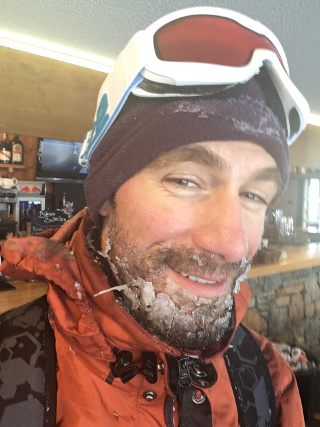
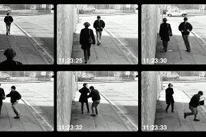
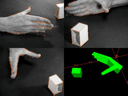
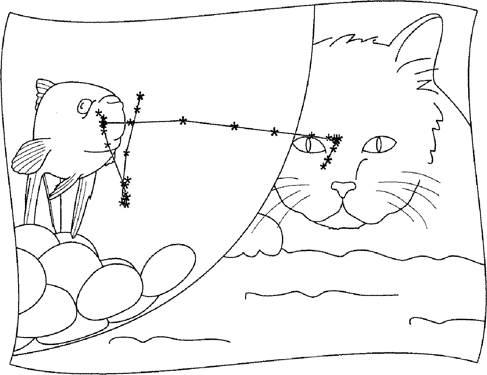

|  |
Teo de Campos
Since June 2021, I have been holding a leave of abscense from the University of Brasilia and I have been working at Vicon Motion Systems (a member of the Oxford Metrics Group). For this reason, I am not planning to accept to supervise new students for the time being. I joined UnB as a "professor adjunto" in July 2016.
I am also linked with the CVSSP/University of Surrey, as a "visiting researcher", where I had worked as a senior research fellow from 2009 to 2016. |
Google scholar is probably the most up to date page for my list of publications, but it may not point to freely available PDF files or my papers.
The links below offer alternatives, which may include links to demonstrations, datasets, etc.
Here is a list of projects, showing the period in which I have been involved (not necessarily the duration of the project as a whole):
Relevant activities I've been involved with:
This section is to be constructed, but you can follow this link to see a list of courses in the field of Artificial Intelligence and Machine Learning that are offered at UnB.
| Intrudocing myself to Computer Vision students (in Portuguese, August 2020). | |
| I've featured in a local TV channel (UnB TV), discussing Deep Learning with my colleague Celia Ghedini Ralha (in Portuguese, May 2017). | |
|  | I've contributed to a NewScientist article about visual sourveillance, by Tim Revell (January 2017). |
| Demonstration of the head pose estimation method based on Random Forests, using Kinect, created using the method of Gabriele Fanelli and others at ETHZ. | |
| Facial feature tracker using Active Appearance Model, code written by Jason Saragih - who did a PhD with Simon Lucey. Source code available from GitHub. |
|
| Face detector combining frontal, profile and ears detectors based on Viola and Jones' method, implemented using OpenCV. |
|  |
|
In the video below, I present a short summary of some of the main aspects of this project:
The video below demonstrates tracking, court detection, homography computation and event detection:
Here is another video, showing the annotation tool that I have developed:
Follow this link for a talk I presented at Microsoft Research in Cambridge, 2010.
